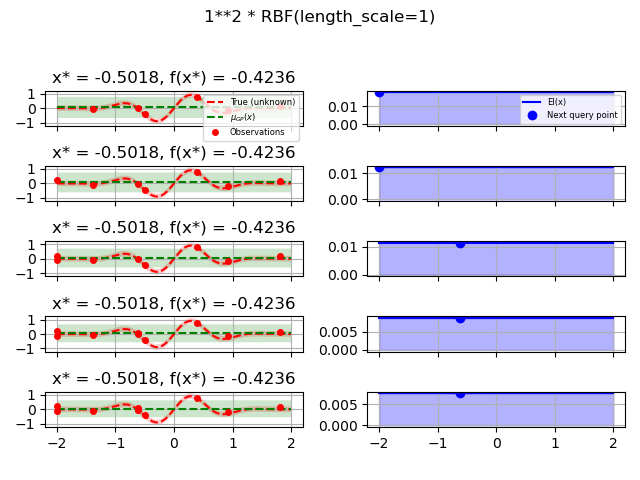
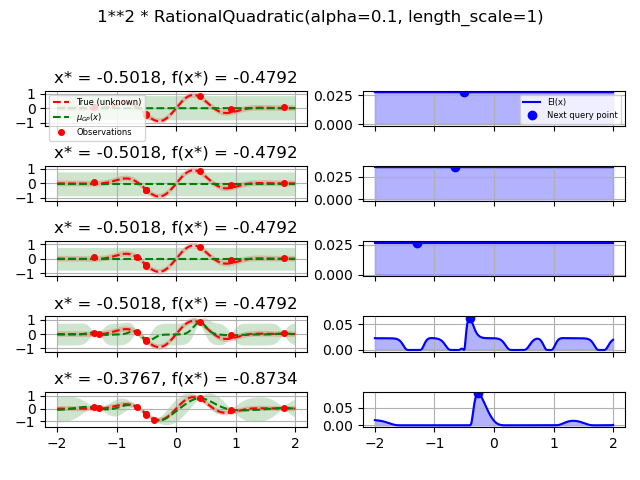
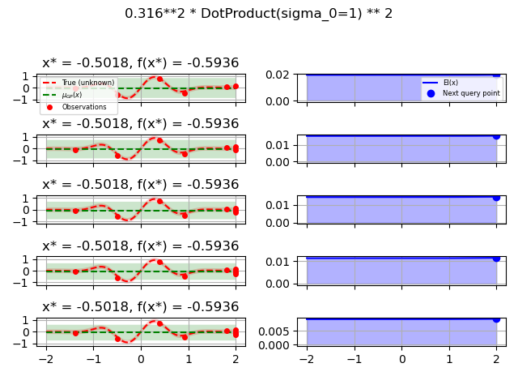

Note
Click here to download the full example code or to run this example in your browser via Binder
Use different base estimators for optimization¶
Sigurd Carlen, September 2019. Reformatted by Holger Nahrstaedt 2020
To use different base_estimator or create a regressor with different parameters, we can create a regressor object and set it as kernel.
This example uses plots.plot_gaussian_process which is available
since version 0.8.
print(__doc__)
import numpy as np
np.random.seed(1234)
import matplotlib.pyplot as plt
from skopt.plots import plot_gaussian_process
from skopt import Optimizer
Toy example¶
Let assume the following noisy function \(f\):
opt_gp = Optimizer([(-2.0, 2.0)], base_estimator="GP", n_initial_points=5,
acq_optimizer="sampling", random_state=42)
def plot_optimizer(res, n_iter, max_iters=5):
if n_iter == 0:
show_legend = True
else:
show_legend = False
ax = plt.subplot(max_iters, 2, 2 * n_iter + 1)
# Plot GP(x) + contours
ax = plot_gaussian_process(res, ax=ax,
objective=objective_wo_noise,
noise_level=noise_level,
show_legend=show_legend, show_title=True,
show_next_point=False, show_acq_func=False)
ax.set_ylabel("")
ax.set_xlabel("")
if n_iter < max_iters - 1:
ax.get_xaxis().set_ticklabels([])
# Plot EI(x)
ax = plt.subplot(max_iters, 2, 2 * n_iter + 2)
ax = plot_gaussian_process(res, ax=ax,
noise_level=noise_level,
show_legend=show_legend, show_title=False,
show_next_point=True, show_acq_func=True,
show_observations=False,
show_mu=False)
ax.set_ylabel("")
ax.set_xlabel("")
if n_iter < max_iters - 1:
ax.get_xaxis().set_ticklabels([])
GP kernel¶
fig = plt.figure()
fig.suptitle("Standard GP kernel")
for i in range(10):
next_x = opt_gp.ask()
f_val = objective(next_x)
res = opt_gp.tell(next_x, f_val)
if i >= 5:
plot_optimizer(res, n_iter=i-5, max_iters=5)
plt.tight_layout(rect=[0, 0.03, 1, 0.95])
plt.plot()
Out:
[]
Test different kernels¶
from skopt.learning import GaussianProcessRegressor
from skopt.learning.gaussian_process.kernels import ConstantKernel, Matern
# Gaussian process with Matérn kernel as surrogate model
from sklearn.gaussian_process.kernels import (RBF, Matern, RationalQuadratic,
ExpSineSquared, DotProduct,
ConstantKernel)
kernels = [1.0 * RBF(length_scale=1.0, length_scale_bounds=(1e-1, 10.0)),
1.0 * RationalQuadratic(length_scale=1.0, alpha=0.1),
1.0 * ExpSineSquared(length_scale=1.0, periodicity=3.0,
length_scale_bounds=(0.1, 10.0),
periodicity_bounds=(1.0, 10.0)),
ConstantKernel(0.1, (0.01, 10.0))
* (DotProduct(sigma_0=1.0, sigma_0_bounds=(0.1, 10.0)) ** 2),
1.0 * Matern(length_scale=1.0, length_scale_bounds=(1e-1, 10.0),
nu=2.5)]
for kernel in kernels:
gpr = GaussianProcessRegressor(kernel=kernel, alpha=noise_level ** 2,
normalize_y=True, noise="gaussian",
n_restarts_optimizer=2
)
opt = Optimizer([(-2.0, 2.0)], base_estimator=gpr, n_initial_points=5,
acq_optimizer="sampling", random_state=42)
fig = plt.figure()
fig.suptitle(repr(kernel))
for i in range(10):
next_x = opt.ask()
f_val = objective(next_x)
res = opt.tell(next_x, f_val)
if i >= 5:
plot_optimizer(res, n_iter=i - 5, max_iters=5)
plt.tight_layout(rect=[0, 0.03, 1, 0.95])
plt.show()
- 
- 

- 

Total running time of the script: ( 0 minutes 11.210 seconds)
Estimated memory usage: 12 MB